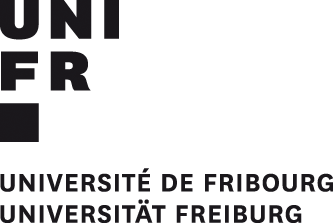

Go to: Steering Committee Institutions Stakeholders Advisory Board Coordinator
Steering Committee
The steering committee is responsible for the overall coordination of SwissRN activity and strategy.
| Institution | Unit | Name | |
|---|---|---|---|
| University of Zürich | Faculty of Science and Faculty of Medicine, Center for Reproducible Science |
 |
 |
| ETH Zürich | Department of Mathematics, NEXUS Personalized Health Technologies |
Stekhoven |
 |
| University of Geneva | Faculty of Psychology and Educational Sciences, Swiss Open Psychological Science Initiative | |
 |
| University of Bern | Vetsuisse Faculty Bern, Swiss 3R Competence Centre |
|
 |
| University Hospital Basel |
Department of Biomedical Engineering, Department of Radiology |
Weidensteiner |
Institutions
Member institutions of the SwissRN are formally committed to support the aims of SwissRN and have begun implementing them. Current institutional members are:
| Institution | Contact person | |
|---|---|---|
| FernUni Schweiz / UniDistance Suisse | Prof. Dr. Nicolas Rothen, Vice-Rector for Research |
|
| University of Basel | Dr. Frank Neumann, Head Research Office |
|
| University of Bern | Prof. Dr. Hugues Abriel, Vice Rector for Research |
|
| University of Geneva | Prof. Dr. Brigitte Galliot, Vice-Rector of Research |
|
|  | Prof. Dr. Hansjörg Schmid, für Islam und Gesellschaft / Centre Suisse Islam et Société |
|
| University of Zurich | Prof. Dr. Elisabeth Stark, Vice President Research |
|
| Università della Svizzera italiana | Prof. Dr. Patrick Gagliardini, Pro-Rector for Research |
|
| Zurich University of Applied Sciences | Prof. Dr. Andreas Gerber-Grote, Head of Research and Development |
|
| Swiss Federal Institute of Technology in Zürich | Prof. Dr. Christian Wolfrum, Vice President Research |
Become a SwissRN Institution
We expect that institutions seeking membership of SwissRN will want to develop capacity to deliver a research improvement strategy, and to work with SwissRN to develop a strategy for ensuring the sustainability of SwissRN in the medium- and long-term, and to build a community of institutions focused on research improvement.
Interested institutions please send an email to Manuela Höfler.
Stakeholders
Stakeholders who support the SwissRN form the Stakeholder Engagement Group with the goal of
- aligning SwissRN activity with the strategy and activity of the stakeholders
- allowing the exchange of ideas
- facilitating feedback on new stakeholder initiatives
| Institution | Contact person | |
|---|---|---|
| Swiss National Science Foundation |  |
Dr. Katrin Milzow, head of strategy |
| Swiss Academies of Arts and Sciences |  |
Managing Director |
| FORS - Swiss Centre of Expertise in the Social Sciences | Dr. Marieke Heers | |
Become a stakeholder in SwissRN
Potential stakeholders include funders (both governmental and charity) and non-profit organisations that are part of the academic environment. To become a member of the Stakeholder Engagement Group an organization has to provide direct financial support or support in kind to SwissRN and is required to agree to our mission and values.
If you would like to become a member of the Stakeholder Engagement Group of the Swiss Reproducibility Network, please send an email to Manuela Höfler.
Advisory Board
An external Advisory Board comprising academics from the international research community with expertise related to the goals of the network supports the steering committee regarding strategy and direction.
| Institution | Unit/Function | Name | |
|---|---|---|---|
| Tilburg University | Department of Methodology | Michèle B. Nuijten |  |
| University of Bristol | School of Psychological Science | Marcus Munafo |  |
| National Centre for the Replacement, Refinement and Reduction of Animals in Research | Head of Experimental Design and Reporting | Nathalie Percie Du Sert |  |
| Former head of Competence Centre for Methodology and Statistics at the Luxembourg Institute of Health | Statistical Consultancy for the Pharmaceutical Industry | Stephen Senn |  |
Coordinator
| Institution | Name & Contact | |
|---|---|---|
| Manuela Höfler, SwissRN coordinator. Please send inquiries to info@swissrn.org |